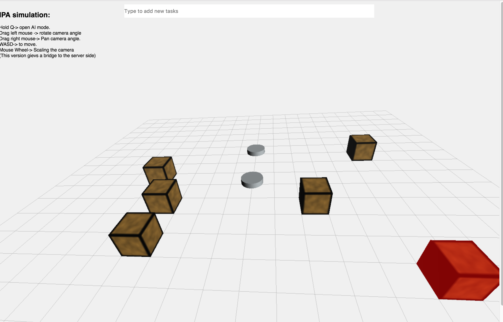

Intro
This is the project I’m currently working on in Croma Lab. The objective is to accomplish a crowdsource based online platform for people to hire crowd worker to do passive jobs.

What is passive task?
By saying passive task, we must mention it’s opposite – active task. Active task is the kind of jobs that needs constant huamn efforts, like “controlling the robot to fetch a cup of water”. Which needs constant human efforts to control the robot. By contrast, passive jobs are the jobs that require little work, but need constant absorbing the information from the environment, like “make some noise when Peter comes by”.
In the latest robot crowdsourcing platform, many jobs are related to passive task, which means they require less efforts than it seems. We plan to create a platform for people combine the active task and passive jobs together at the same time.
IPA-platform stands for the intelligent personal assistant, which is the platform that provides people with the crowdsourcing platform to do multiple passive jobs.
Since passive jobs require little computation power, say, human mind, so decide to design a multi-streaming system that enables multiple streaming at the same time, which means the people can do several passive jobs together.
What have we done?
We have done the prototype of this platform which includes:
- An online simulation platform for people to trying control virtual robot in a simulation environment before touching the real robot.
- We have realize the ability to add different obstacle to the environment to simulate the true situation.
This platform enables people to play the streaming in different speed and checkout different streaming at the same time.